GitFlow
什么是GitFlow？
Gitflow 是一种替代的 Git 分支模型，涉及功能分支和多个主分支的使用。该书最初由文森特·德里森在nvie出版并推广开来。与基于trunk的开发相比，Gitflow拥有众多且寿命更长的分支和更大的提交。在该模型下，开发者创建一个功能分支，并延迟将其合并到主干分支，直到功能完成。这些寿命较长的特征分支需要更多的协作来合并，且偏离主干分支的风险更高。它们也可能引入冲突更新。
Gitflow 可用于有预定发布周期的项目，也可用于持续交付的 DevOps 最佳实践。除了功能分支工作流程所需的概念或命令外，此工作流程不会添加任何新概念或命令。相反，它为不同的分支分配了非常具体的角色，并定义了它们应该如何以及何时进行交互。除了
feature分支外，它还使用单独分支来准备、维护和录制版本。当然，您还可以利用功能分支工作流程的所有优势：拉取请求、隔离实验和更高效的协作。
五大分支
- 主分支：main / master
- 开发分支：develop
- 功能分支：feature
- 发布分支：release
- 热修复分支hotfix
主分支：main / master
永远保持可发布状态
每一次提交都应该是已经测试、可上线的版本
通常只允许：
release合并进来hotfix合并进来
一般会在这里 打 tag
v1.0.0
v1.1.0
不在 main 上直接开发代码
开发分支：develop
作用：日常开发的集成分支
- 所有新功能最终都会合并到这里
- 包含“下一个版本”的所有开发内容
- 相对不如 main 稳定，但应该是可运行的
特点：
feature→developdevelop→release
功能分支：feature/*
作用：开发具体功能
- 从
develop拉出来 - 一个功能一个分支
- 功能完成后合并回
develop
发布分支：release/*
作用：版本发布前的“冻结分支”
- 从
develop拉出来 - 只允许：
- bug 修复
- 文档/版本号修改
- 不再添加新功能
热修复分支：hotfix/*
作用：线上紧急 Bug 修复
- 从
main拉出来 - 修完立刻发布
- 同时要合并回
develop
基本图
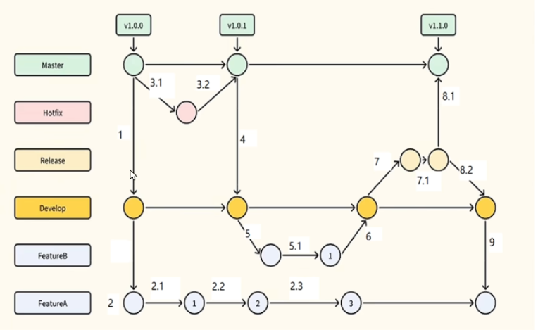前置流程
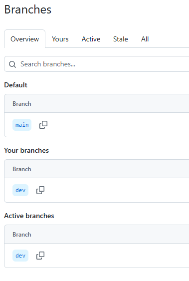 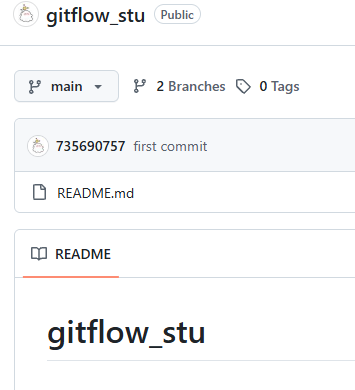 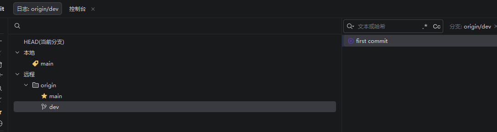开发新需求A
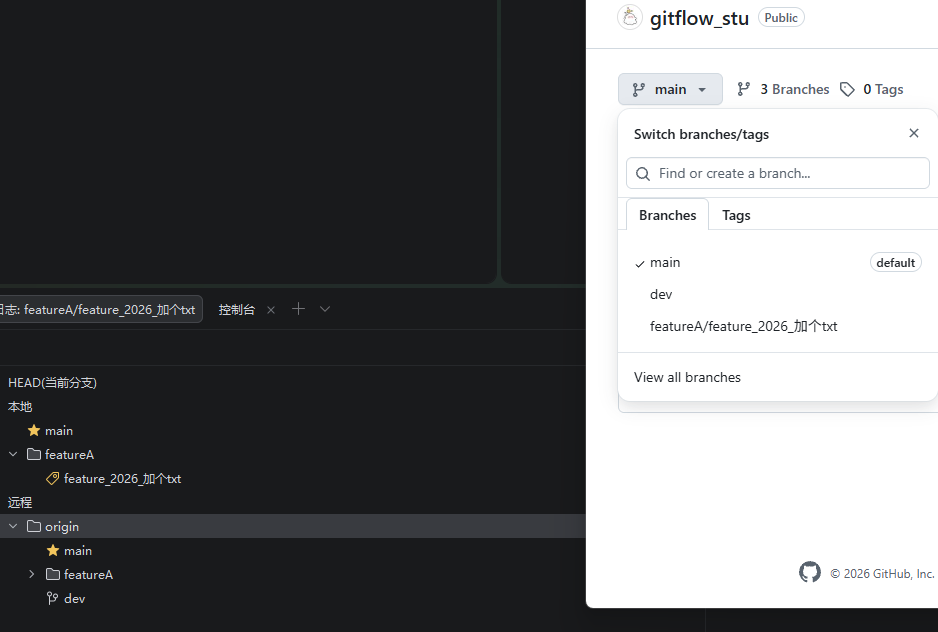提交
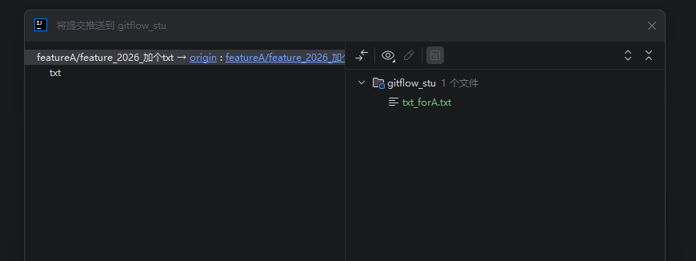观察到dev并未受影响。
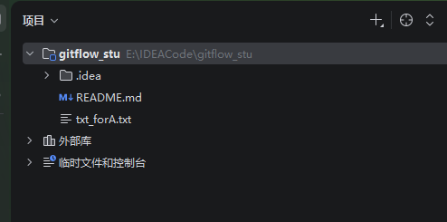 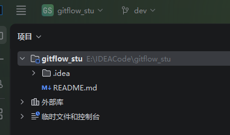开发新需求B与C
省略，同样提交并合并到dev之中
合并的结果
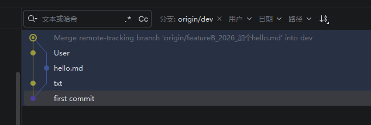为了整洁，新特性开发完毕之后需可以删除分支。
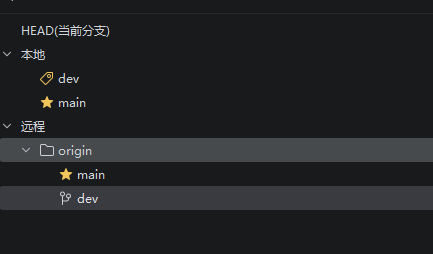发布分支
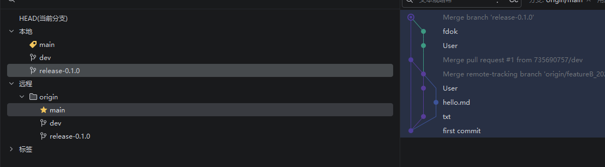生产环境出bug了怎么办
使用hotfix分支
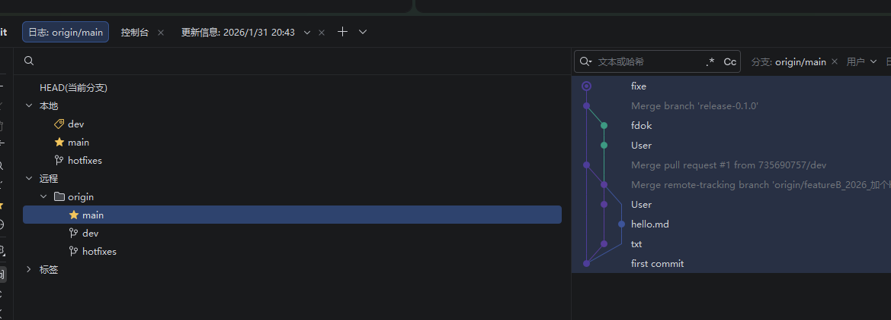结束之后合并到main与dev
GitFlow的优缺点
优点：分支职责清晰，结构规范，支持并行开发，发布流程可控、可追溯，对线上问题响应快，适合传统软件工程流程
缺点：分支较多，流程偏重，不太适合高频发布，合并冲突概率较高
版本回退、撤销、重置
查看当前状态：
git status
未add的代码行发生改动怎么回退？
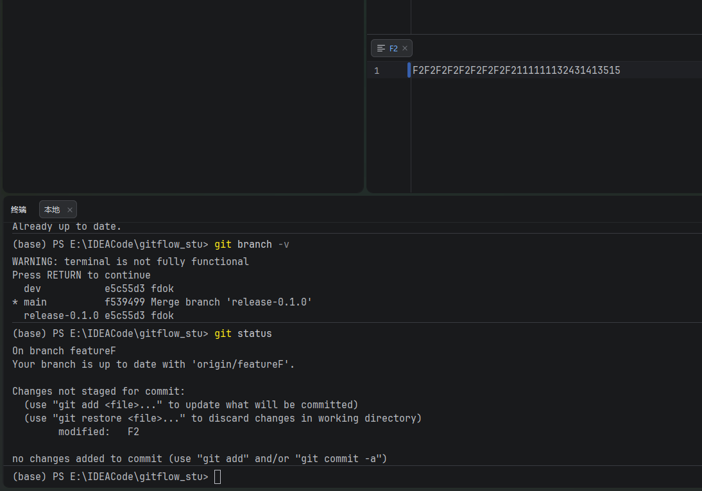git checkout -- F2
已add未commit的代码行发生改动怎么回退？
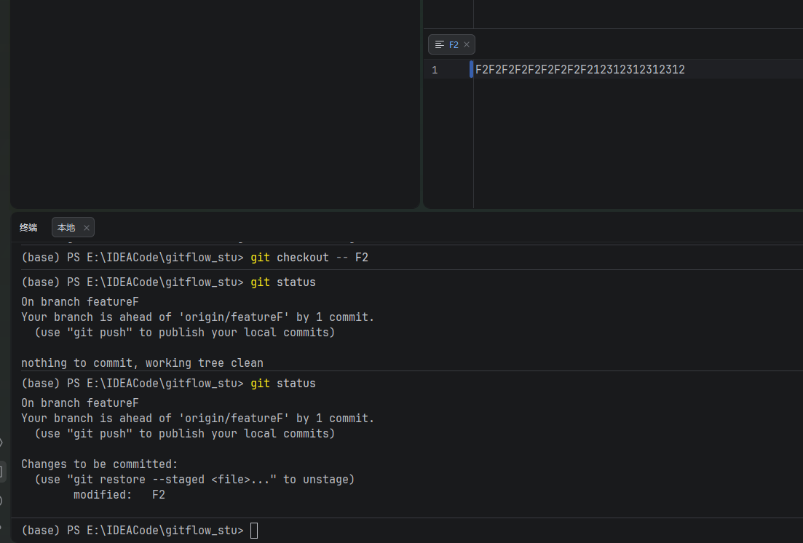git reset HEAD XXXX
已add已commit未push的代码行发生改动怎么回退？
两个异常改动
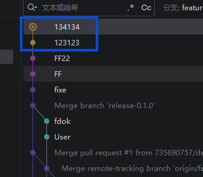两个^就是回退两步
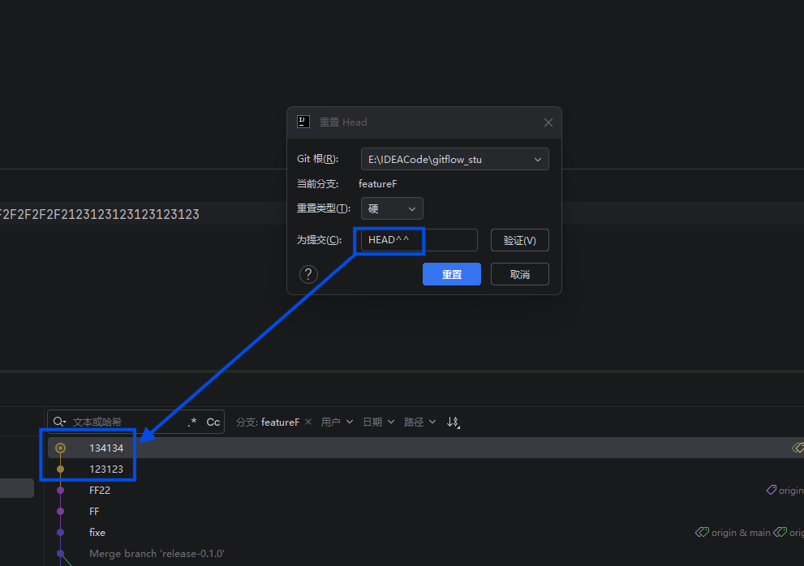 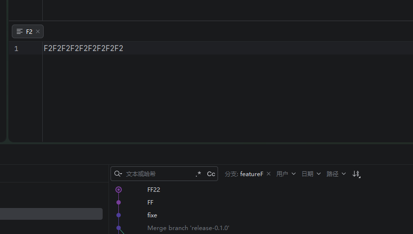已add已commit已push的代码行发生改动怎么回退？
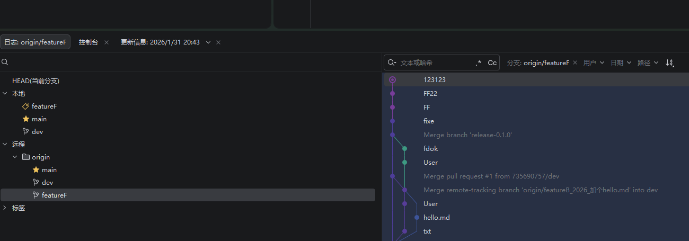git revert --no-edit cxxxxx
其中cxxxx是提交流水号。
更方便地使用还原提交。
 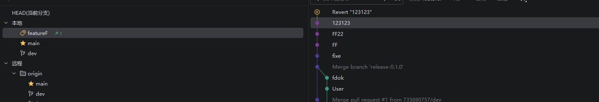
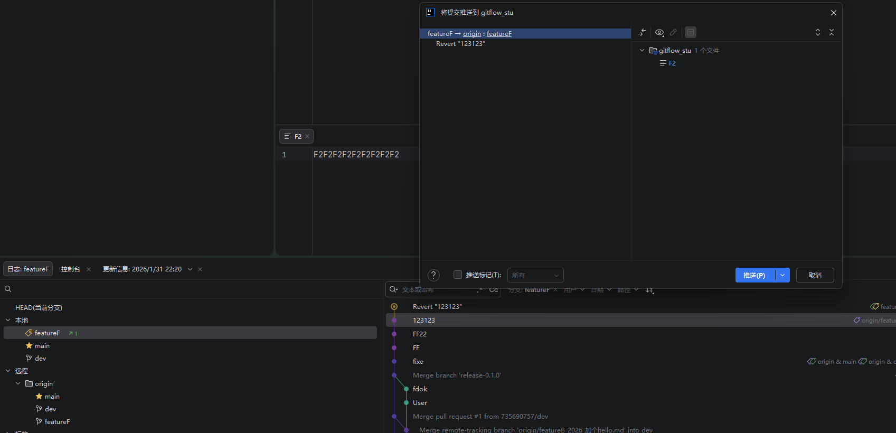
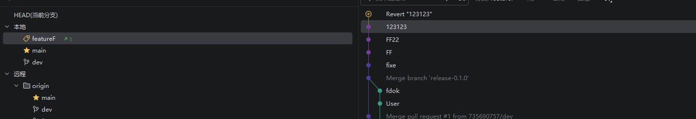
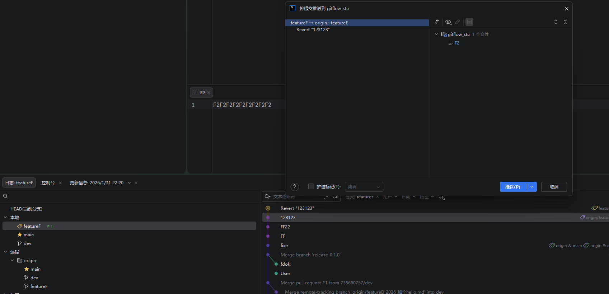
revert后是否可以再revert？答案是可以的。
git stash
git stash是临时保存当前未提交的修改，把工作区恢复到“干净状态”
写了一半代码，还不想 commit，又必须马上切分支 / 拉代码 / 修 Bug， git stash 就是把现场“打包放抽屉里”
git cherry-pick
把“某一个（或几个）提交”从别的分支，复制一份，应用到当前分支
关键词：只要这个提交，不要整个分支
或者说，提交了100行，有60还可以，40行我有点后悔了，怎么只撤回这40行？
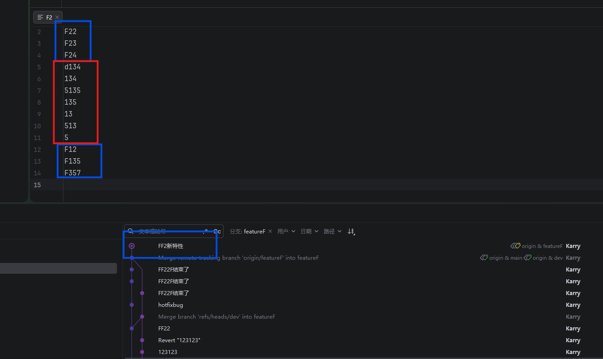先revert，push到远程
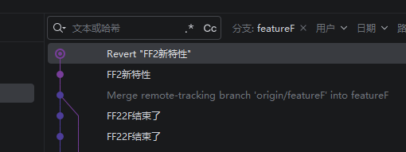基于现有分支，创建新分支
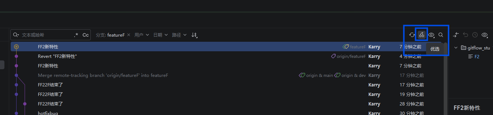撤销修改
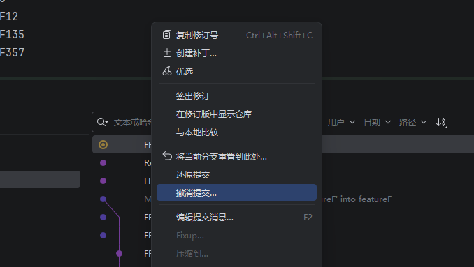冻结
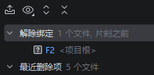 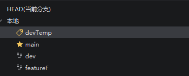 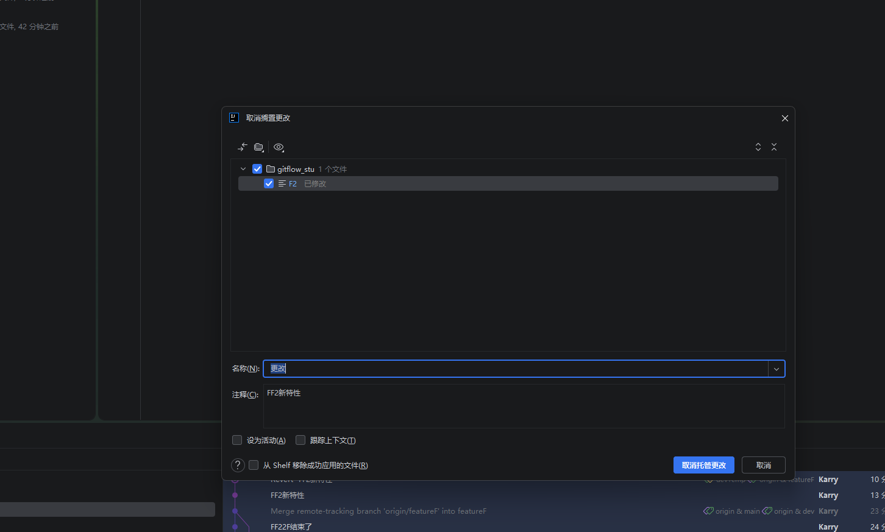变基rebase和合并merge
合并（git merge）是什么，就是把两个分支的历史合并到一起。
变基（git rebase）是什么，把一个分支的提交 “挪到”另一个分支的末尾
merge通常是弯弯曲曲的路线，而rebase把对方的线路合并到你这里，但是这个合并更像是重新播放了一遍，改写了历史，使之成为了更加线性的流程。
rebase推荐在本地上使用，更加整洁，团队协作推荐使用merge。
拉取pull和提取fetch
提取是看看哪些变了（不修代码），拉取真正到本地（修代码）
最佳实践是，先fetch看看那些变了，再pull去更新我们的代码。